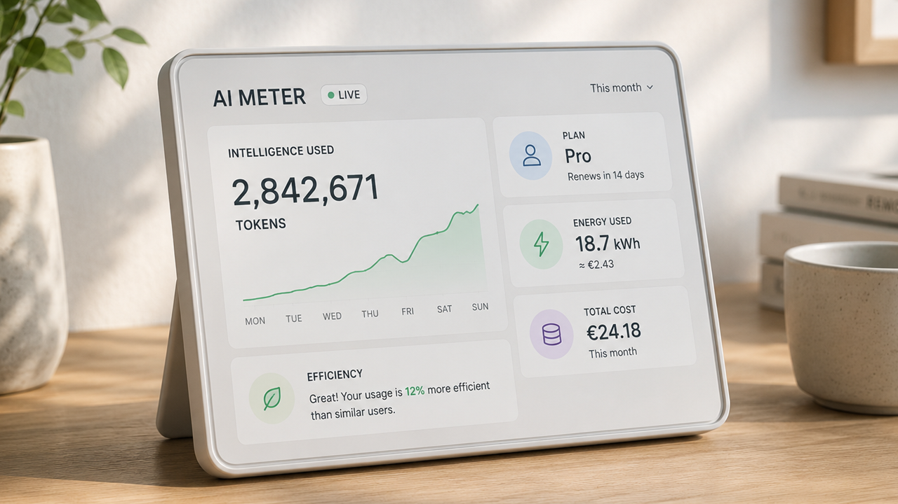

Image captionClean AI Meter dashboard on a desk, displaying live token usage, energy consumption, costs and efficiency metrics.
The meter
The next honest AI interface may need a meter. Not a scary one, not a punishment dashboard, just a clear account of what the system is spending: tokens, money, power, time and attention. That sounds less glamorous than a new model name. It may matter more.
ITPro reports that Accenture has warned staff against unnecessary AI use as token spend rises, a small but telling sign that model access is starting to look like a managed operating cost rather than a bottomless software perk.1 OpenAI's own API pricing page makes the structure plain: model use is metered by input and output tokens, and different models carry different costs.2
This is not a case against AI. It is a case against pretending that intelligence is free once it is hidden behind a chat box. The appeal of AI gets stronger when people can see the trade. A good model can save hours. A strong coding agent can make a careful developer much faster. A research assistant can turn a messy pile of documents into a first map. Fine. But the bill is real, and it is now part of the product story.
The old subscription story made AI feel like software. Pay the fee, open the window, use the magic. The token story makes it feel more like energy, bandwidth or compute. Tom's Hardware, summarizing the enterprise pressure, notes that heavy users can consume far more in model costs than a flat subscription price suggests, pushing companies toward cheaper open-source or Chinese models for routine work and reserving expensive frontier systems for harder tasks.3 That is not the end of frontier AI. It is the beginning of a more adult market.
Power and place
The same meter is showing up outside the software budget. The Guardian reports that data centers are driving clean-energy demand in the United States while also creating local grid and climate pressure, including situations where fossil capacity is kept alive or expanded to serve compute demand.4 That is the awkward shape of the AI buildout. It can pull new solar, wind, batteries and grid investment into the world. It can also overload places that did not ask to become the physical basement of somebody else's intelligence product.
The newest research is more useful than the loudest slogans. One June 2026 study of 403 U.S. hyperscale data centers estimates that those facilities used roughly 68 to 99 terawatt-hours of electricity between May 2024 and April 2025, with the central scenario representing about 1.8% of total U.S. electricity consumption and a fossil-heavy generation mix.5 Another new paper asks whether data centers have already raised U.S. electric bills and reaches a more surprising conclusion: from 2015 to 2024, average retail rates may have fallen modestly because durable demand growth can spread fixed grid costs, though the authors warn future supply constraints could reverse that effect.6
That nuance matters. The lazy debate says data centers are either the future or a theft of electricity. The better debate asks where they go, what powers them, who pays for grid upgrades, how much useful work they produce, and whether better chips, routing, caching, smaller models and new energy systems can improve the ratio. Intelligence per watt and intelligence per dollar should become normal language, not specialist trivia.
The Appeal
- The meter does not make AI less magical. It makes the magic accountable.
- Cheaper routing and smaller models can be progress, not a downgrade.
- The public case for AI depends on useful output per dollar, watt and square foot.
This is where the optimism still lives. Early computers filled rooms. Better machines, better chips and better software made the useful work denser. AI needs the same discipline. The answer cannot be "stop." It also cannot be "build anything, anywhere, at any cost." The appeal is a more capable civilization with less wasted motion: models that choose the right tool, data centers that fit the grid, chips that turn power into more useful reasoning, and products that show enough of the meter for people to trust the bargain.
Personal opinion only. The sources below should be read directly; the claims here depend on their reporting and methods. The point is not that every token is bad or every data center is suspect. The point is simpler: if AI is becoming infrastructure, it has to learn the manners of infrastructure. It needs prices people can see, systems people can audit, and gains that are visible outside the companies buying the biggest clusters.
Sources
- ITPro: Accenture warns staff about unnecessary AI token spend
- OpenAI API pricing
- Tom's Hardware: AI costs spike as subscriptions hit pricing wall
- The Guardian: data centers drive clean energy growth while stressing climate goals
- arXiv: carbon emissions and energy consumption of U.S. hyperscale data centers
- arXiv: causal evidence on data centers and U.S. electric bills